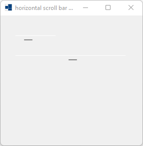
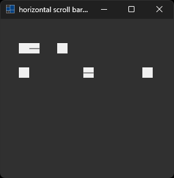
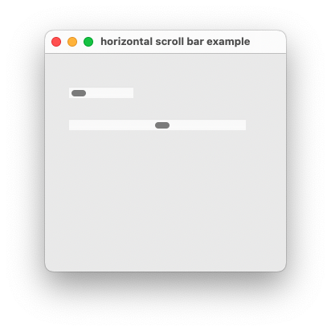
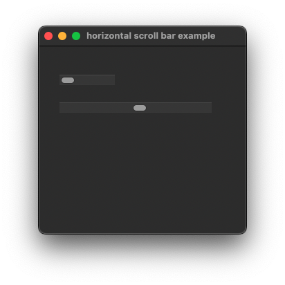
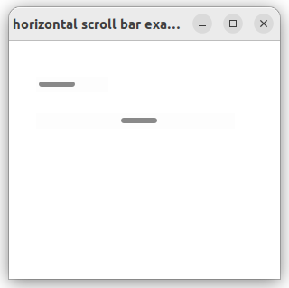
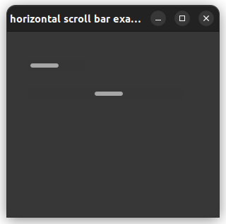

|
xtd
0.2.0
|
h_scroll_bar.cpp
demonstrates the use of xtd::forms::h_scroll_bar control.
- Windows
- 

- macOS
- 

- Gnome
- 

#include <xtd/diagnostics/debug>
#include <xtd/forms/application>
#include <xtd/forms/debug_form>
#include <xtd/forms/form>
#include <xtd/forms/h_scroll_bar>
using namespace xtd::forms;
namespace h_scroll_bar_example {
public:
form1() {
text("horizontal scroll bar example");
h_scroll_bar1.parent(*this);
h_scroll_bar1.location({30, 40});
h_scroll_bar2.parent(*this);
h_scroll_bar2.location({30, 80});
h_scroll_bar2.large_change(2);
h_scroll_bar2.minimum(0);
h_scroll_bar2.maximum(20);
h_scroll_bar2.value(10);
h_scroll_bar2.width(220);
h_scroll_bar2.scroll += [&] {
xtd::diagnostics::debug::write_line(xtd::ustring::format("h_scroll_bar2 value = {}", h_scroll_bar2.value()));
};
}
private:
debug_form df;
h_scroll_bar h_scroll_bar1;
h_scroll_bar h_scroll_bar2;
};
}
auto main()->int {
application::run(h_scroll_bar_example::form1 {});
}
static void write_line()
Writes a line terminator to the trace listeners in the listeners collection.
Definition: debug.h:358
static void run()
Begins running a standard application message loop on the current thread, without a form.
static ustring format(const ustring &fmt, args_t &&... args)
Writes the text representation of the specified arguments list, to string using the specified format ...
Definition: ustring.h:744
xtd::forms::style_sheets::control form
The form data allows you to specify the box of a form control.
Definition: form.h:21
@ text
The xtd::forms::status_bar_panel displays text in the standard font.
The xtd::forms namespace contains classes for creating Windows-based applications that take full adva...
Definition: about_box.h:13
Generated on Sun Oct 1 2023 07:46:00 for xtd by Gammasoft. All rights reserved.